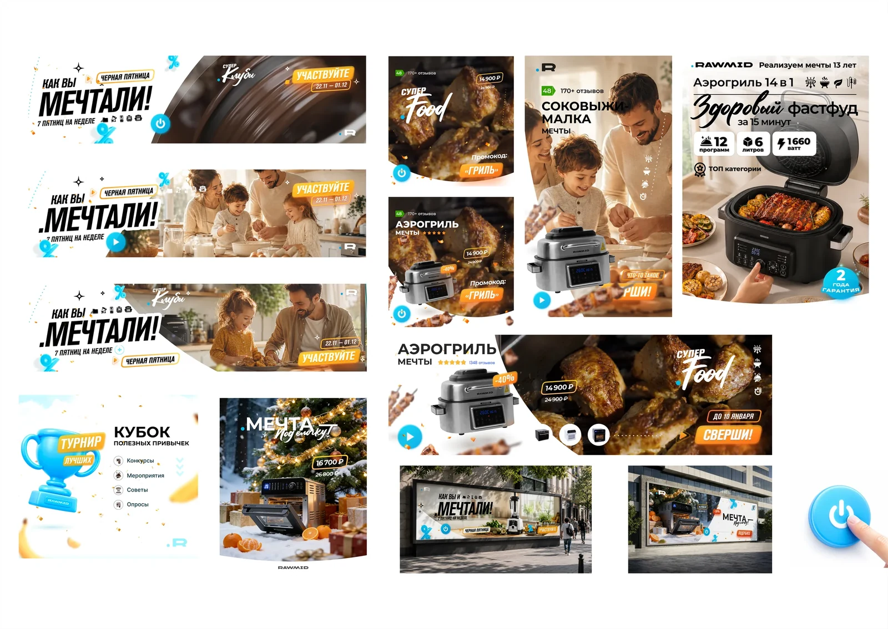
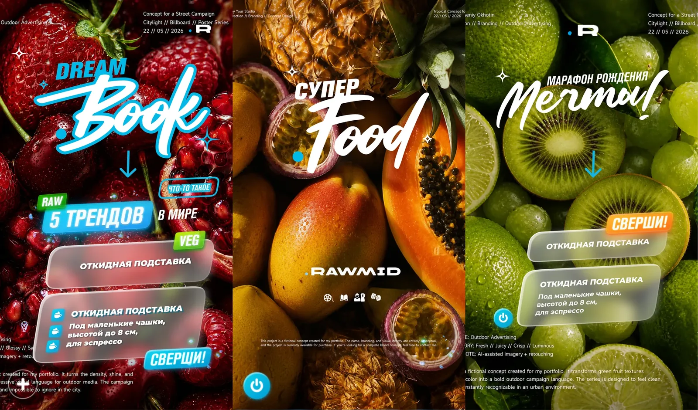
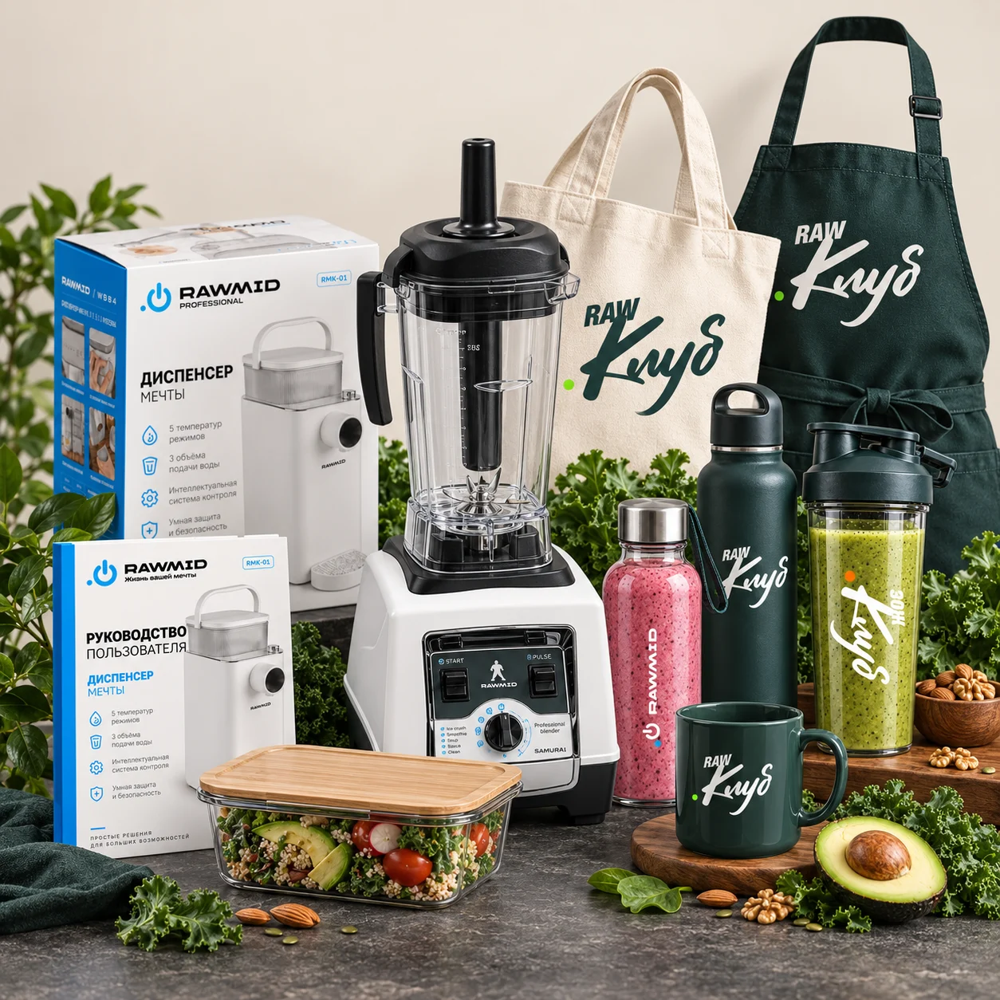
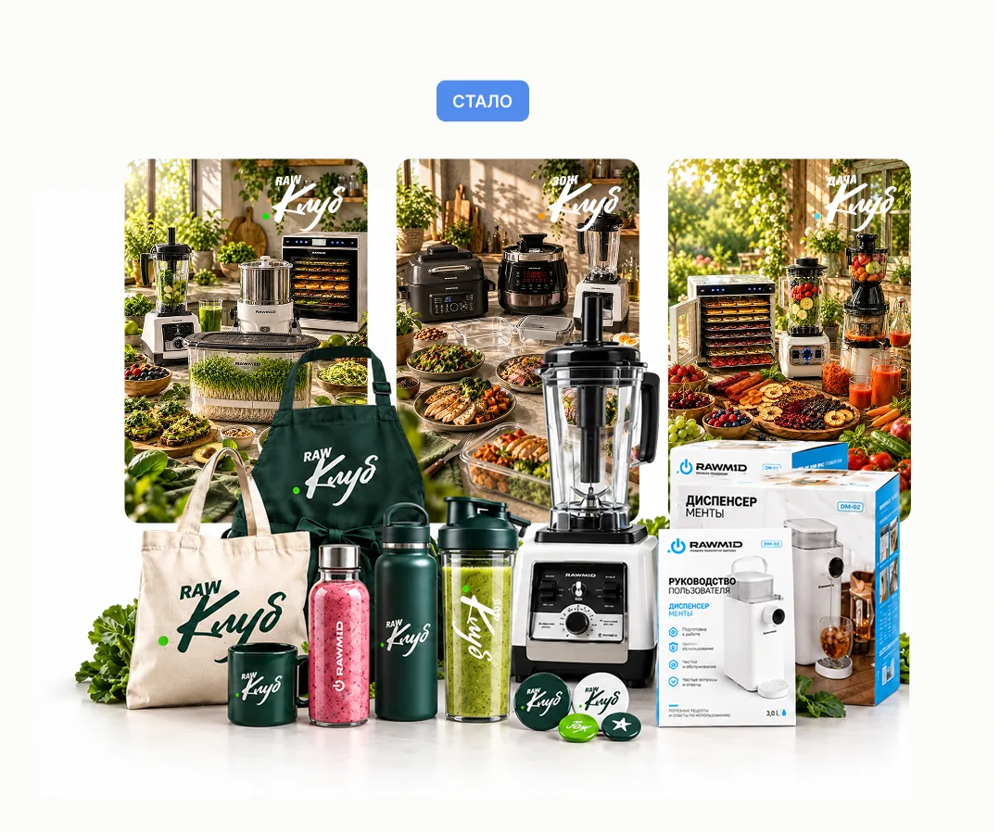
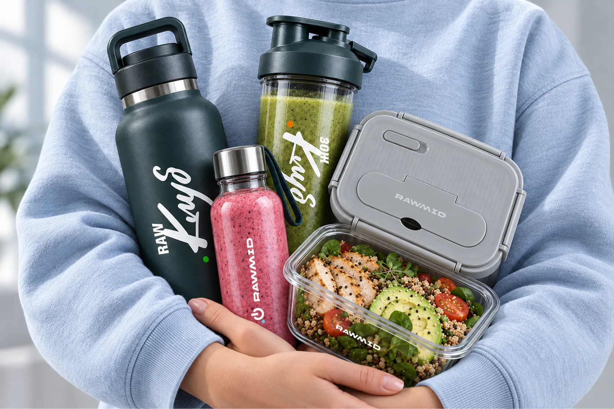
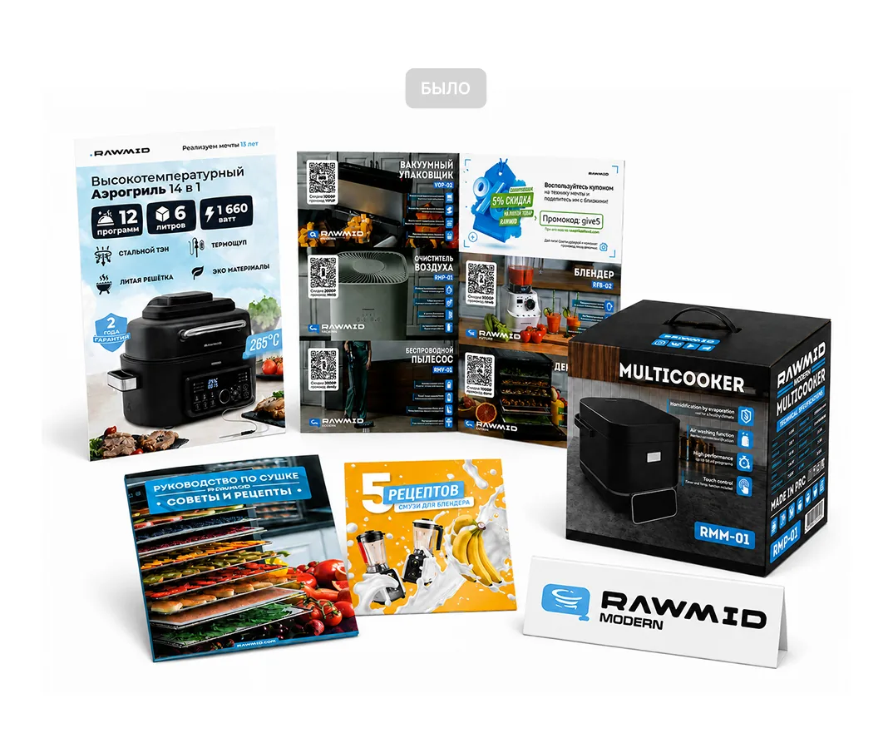

RAWMID
2022–2025 · brand identity · Art Director → Creative Director, Made In Dream (RAWMID) · [team]
01 / Brand platform
Built the brand platform: idea, mission, values, audience research. Tied it to the product logic, the brand language and buyer groups, and to how content speaks to each group. Illustrated the visual language and scaled it across packaging, merch and marketing materials.
02 / Identity
[logo before and after the update, typefaces, patterns to follow]
03 / Ad campaigns and post types
Social layouts: recipes and products in one visual language.

04 / Product cards
[text to follow]
05 / Packaging and merch
Illustrated the visual language and scaled it across packaging, merch and marketing materials.



06 / Before and after
Packaging after the rebuild: one visual language across the line.

01 / Insight
[insight, text to follow]
02 / Idea
Brand: from idea to clubs
03 / Execution
Built the brand platform: idea, mission, values, audience research. Tied it to the product logic, the brand language and buyer groups, and to how content speaks to each group. Illustrated the visual language and scaled it across packaging, merch and marketing materials.
04 / Result
Home-appliance brand, 35+ SKUs, 7 channels, 10+ products and 10 campaigns a year. Product-card CTR 1.7% → 3.4%, engagement on AI visuals ×1.5–2.